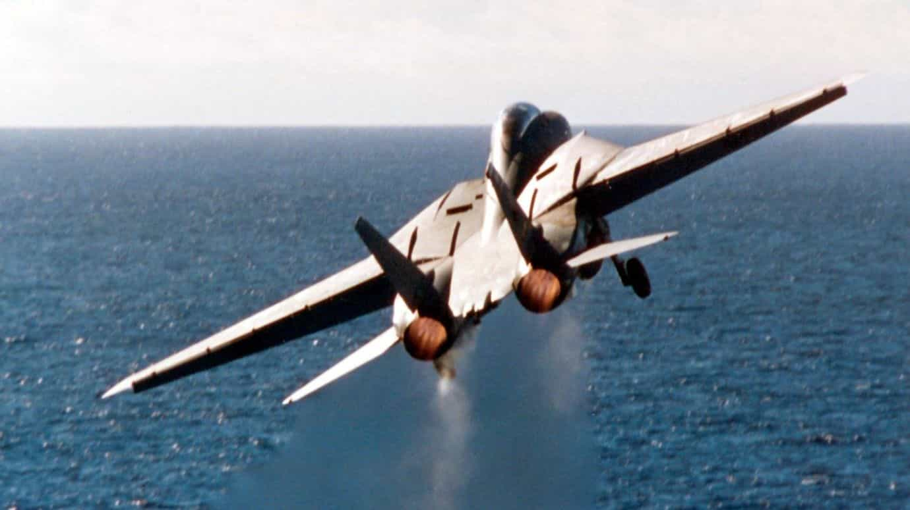
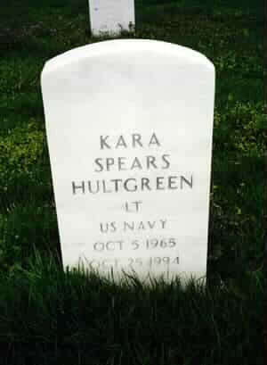
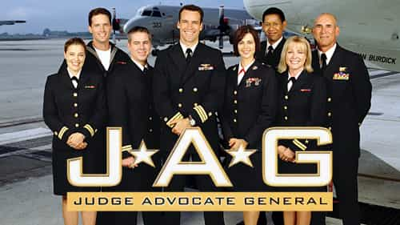
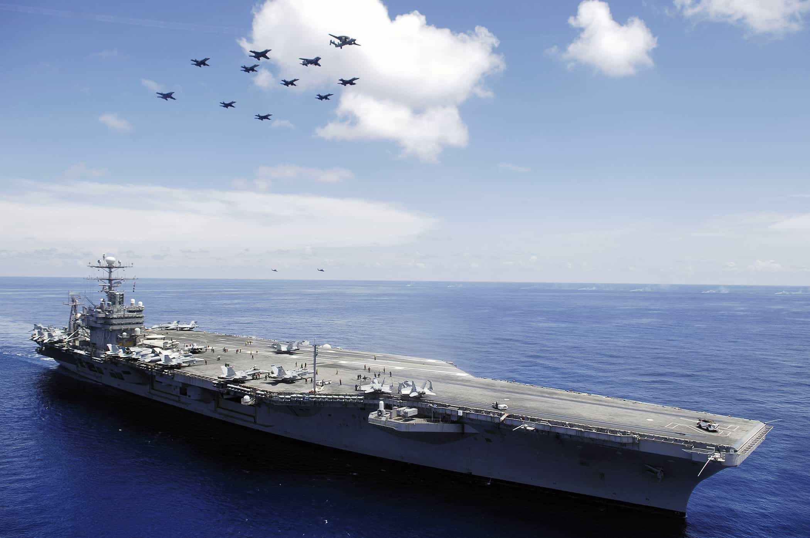

< < < Back
The Deadly Consequences Of Feminist Propaganda In The US Navy – Return Of Kings
Back in 1993, Congress lifted the ban restricting women from flying in combat and serving on various Navy vessels. If you’re saying to yourself, “That sounds convenient,” in light of the fact that the Soviet Union collapsed in late 1991, you’re probably a pretty smart guy. Given the United States was now the stand-alone superpower, and with no nations that could even come close to competing with our military superiority, it was decided that women could serve a more active role in fighting our enemies.
One of the first women to get on board with this new program was a woman named Kara Spears Hultgreen. Hultgreen stood at an imposing 5’10 and had the ability to bench press 200 pounds—impressive for a man, let alone a woman. Kara joined the Navy in 1987 after graduating from the University of Texas with a bachelor’s degree in Aerospace Engineering. She earned her commission through the Aviation Officer Candidate School in Pensacola and went on to fly several trainers and jets. Kara ultimately achieved the rank of lieutenant with the Navy.
Lt. Hultgreen was destined to make history and become the first female F-14 Tomcat pilot. Given her physical strength, and high level of intelligence, she seemed to be the perfect candidate for a female fighter pilot.
Shepherding The Weak
Training on the F-14 proved to be a little more difficult than expected for the 29 year old lieutenant. Male naval aviators were held to the normal “three strikes and you’re out” policy regarding checkride or training failures (called “downs” in the Navy). If these failures were severe enough, a man could be expelled with as little as one or two failures. Standards were high, as you would expect with men responsible for commanding multi-million dollar aircraft that carry deadly weapons. However, these same standards didn’t apply to Lt. Hultgreen–she had accumulated four downs, yet was still allowed to continue flying.
Commanding Officers had their hands tied. This was the ushering in of a new era. Peter Jennings, of ABC News, said at the time, “There is a vicious campaign against allowing women to serve in combat.” The Clinton administration was now running the show, and they wanted results. Anything less than having women in these combat roles would be seen as sexist or misogynistic, but is that really the case? Are we to believe that Lt. Hultgreen’s four downs were the result of indignant, or worse yet, neglectful actions of those male officers that were running the Navy’s F-14 training program?
Were Kara’s failures a result of spite, or would time prove that perhaps, just maybe, her commanding officers were looking out for her best interests and the best interests of the U.S. Navy? We’re talking about lieutenant commanders and commanders. Naval aviators that had seen some shit in their day and were the best of the best at what they do: flying airplanes and teaching young officers how to fly airplanes.
These were top-notch instructors who had their own careers and reputations to uphold. They were professional men who had dedicated their lives to their trade—they were not a bunch of fuck-ups who would just shit all over a female aviator for just for kicks. The very real possibility existed that she was a danger to herself and to those tasked with working with her. Fear of having one’s career stricken from them, fear of not being able to feed one’s family, or fear of separating service from the military with a less than honorable discharge were what kept Lt. Hultgreen in the cockpit.

Ideology Collides With Reality
On October 25, 1994, Lt. Hultgreen was flying a training mission off the USS Abraham Lincoln aircraft carrier—positioned near the coast of California at the time. Sitting behind her was Lieutenant Matthew Klemish, acting as the Radar Intercept Officer (ROI). Kara began her final approach to the USS Abraham Lincoln by ignoring repeated waveoff signals by the landing officer. Lt. Hultgreen found herself overshooting the centerline of the landing area and attempted to compensate for the botched approach by applying additional left rudder—a lot of left rudder. Her overzealous rudder inputs caused a compressor stall of the left hand engine.
Following the compressor stall, Lt. Hultgreen applied full power and full afterburner to the remaining right hand engine and established the aircraft in a nose high attitude—attempting to abort the approach and go around. The increase in power on the right hand engine caused the aircraft to yaw even harder to the left. Asymmetrical thrust coupled with the high angle of attack of her climb out attitude was more than the aircraft could handle. Ultimately, the entire left wing stalled, and the aircraft dropped hard to the left.
Lt. Klemish in the back, undoubtedly experiencing a severe case of ‘fuck this shit’, initiated the ejection process for both himself, and Lt. Hultgreen. Lt. Klemish’s seat was the first to eject in the sequence, and he narrowly escaped with his life. Lt. Hultgreen’s seat ejected only half of a second after Klemish’s, but it was too late. The aircraft had rolled over to the point that Lt. Hultgreen was ejected directly into the Pacific Ocean. She was killed immediately upon impact. The 38 million dollar F-14 she was flying was reduced to a waterlogged piece of very expensive wreckage.
Nineteen days following the crash, her body was recovered. She was buried on November 21st at Arlington National Cemetery and received full honors.

The Cover-Up
The Navy’s JAG was assigned with the investigation of the crash and to arrange a report of their findings. The JAG concluded the accident was caused by a mechanical failure of the left engine. The JAG’s “report” rejected the notion that there were widespread accusations that Lt. Hultgreen was not qualified to be a fighter pilot. The report claimed that the F-14 had a history of accidents and that the aircraft’s two Pratt & Whitney TF30 turbofan engines were underpowered for the airframe.
Top brass in the Navy vehemently stated that Lt. Hultgreen’s death was nothing more than a very unfortunate and devastating event. It was not because she was a woman. It wasn’t because of pressure from progressives and feminists. High ranking Navy officials flat-out said it wasn’t her fault. This was their story and they were sticking to it.
That’s exactly what they did—they stuck to their story. According to the Navy, Lt. Kara Hultgreen was a hero that died unnecessarily in a tragic accident. The JAG’s report was officially released to the newspapers and TV news outlets. The press spread the report far and wide to the American public.
The Navy even held a simulator demonstration with 13 male F-14 pilots to demonstrate that the accident was completely unpreventable. Only one of those pilots—the commanding officer—was able to “survive” the conditions replicated in the simulator. This was widely reported in the media as well and served to further hammer home the point that all of the events leading up to the crash were completely unavoidable, and not survivable.

The Truth
The Navy Safety Center was also involved with examining the crash. It was their responsibility to conduct a Mishap Investigation. Their findings were much different than those of the JAG. They cited pilot error as the cause of the accident, and concluded that Lt. Hultgreen was completely at fault. The Mishap investigation concluded that Lt. Hultgreen made four major errors that contributed to the crash. They were the following:
1. Excessive rudder use contributing to compressor stall. The Naval Air Training and Procedures Standardization manual for the F-14 specifically states that excessive rudder inputs can result in a compressor stall.
2. Failure to execute proper waveoff procedures.
3. Failure to inform Lt. Klemish in the backseat that there was an emergency.
4. Failure to make a decision to eject.
Interestingly enough, this report didn’t make its way to NBC, ABC, or the New York Times. It was, in fact, intended to be kept completely under wraps and never disclosed to the public. It’s the Navy’s privilege to keep the report classified—they were under no obligation to release its findings to the media. The question remains though: why didn’t the JAG’s report mirror the findings of the NSC’s Mishap Investigation?
A junior officer, either an ensign or a lieutenant (junior grade), with a moral compass and access to the Mishap Investigation Report wondered the same exact thing. He leaked the official report and allowed the truth to come out.
It also turned out the simulator session with 12 of 13 pilots crashing the aircraft was staged by the Navy. The pilots were forbidden to respond properly to the emergency they were presented.
The F-14 Tomcat was used by the Navy from 1974 to 2006. No pilot, other than Lt. Hultgreen, has ever compressor stalled one of the aircraft’s engines due to excessive yaw/rudder application. F-14 pilots are specifically trained on the aircraft’s propensity to compressor stall and do not perform maneuvers that can cause it. Lt. Hultrgreen was instructed on the dangers of excessive rudder use, but either ignored her training or forgot about it in the heat of the moment.
Kara Hultgreen was a big, strong, and highly intelligent woman. She had successfully flown the A-6 prior to training on the F-14. She was under a great deal of pressure to become the first combat pilot in the Navy. She was being rushed and pushed beyond her personal limits. The powers that be wanted women in these combat roles, and God dammit, they wanted them there right now. This pressure was not only extended to Lt. Hultgreen, but to her commanding officers and anyone else involved with her training.
The top brass of the Navy were watching all of them like hawks. Anything to upset the feminists and progressives would be seen as oppressive double standards—she wasn’t allowed to fail, and none of her male superiors were allowed to fail her. She was out of her depth and everyone around her knew it. Given her intelligence, I’m 99 percent sure that she knew it too, but she pressed on at her own peril, and very likely, to satisfy her own ego. Luckily, Lt. Klemish was able to escape with his life and none of the carrier crew were killed in this tragedy.

In Closing
This event took place 20 years ago—it’s old news. However, one must ask themselves, what was the point of Lt. Hultgreen’s death? What was the purpose of throwing 38 million dollars into the Pacific Ocean? Sadly, only the Soviet Union collapsed in December of 1991—its Marxist principles that were idealized and idolized as its foundation did not collapse along with it. It’s an interesting yet sordid tale. With the collapse of a communist empire such as the U.S.S.R., it would seem sagacious to extract every valuable lesson learned from its failure and vow to never—under any circumstances—repeat or implement the same systems and policies that resulted in its demise.
The U.S. took away no such lessons. In less than two years following the dismantling of the Soviet Union, the U.S. was lifting bans and effectuating policies that would have gotten the nod of approval from the likes of Lenin, Trostsky, and the whole of the Soviet politburo. What was the point of the Cold War if the end result was to slowly become a mirror’s reflection of the very system we spent decades trying to undermine?
Lt. Hultgreen’s coffin may have been draped with an American flag, but she died for its gynocentric right hand crony feminism. In the 20 years following Lt. Hultgreen’s death, what has improved? What has feminism given us, exactly? Feminism has proven to do nothing more than perpetually drive home the point that not good enough, is in fact, the new good enough. To say anything to the contrary of the politically correct feminist narrative will quickly have you labeled as a scumbag women hating misogynist—there’s no room for honesty in feminism.
That is what feminism gives us. It gives us silence in the face of inadequacy, even if that inadequacy can result in the loss of life. It ties the hands and gags the mouths of the reasonably minded and the responsible. It gives us cover-ups and subterfuge in lieu of the fervent thoroughgoing truth. It erodes the morale of the profoundly talented, while giving the deficient a place and a voice that they do not deserve, and did not earn. Feminism is a systematically imposed mechanism that saddles men with the responsibility of compensating for the frailty and biologically imposed limitations bestowed upon women—just so they can arrogantly, yet fallaciously say, “See assholes? We can too!” It gives us special interests, but not our best interests.
The world works in one of two ways. The first is to shovel the necessary shit, pay your dues, and work tirelessly to achieve your goals to the highest level. You will have fought tooth and nail to earn your stripes and you will never be given any reason to doubt why you have a place at the table; you’re there because you deserve it. Most importantly, the strife you endured and the hardships you overcame will give you immeasurable pride. You will have persevered and built a strength of character that extends down to the core of your soul, and no one can ever take that away from you—it’s yours. As a result of all of your hard work and dedication, you will be respected.
The alternative is that you can have special treatment, privileges, and coddling. You can use excuses and cries of victimhood to justify your own shortcomings. You can bully your way into a place at the table via legislation and lawsuits. Indeed, you will have your place. You will find yourself amongst the best and the brightest. Insincere smiles, phony congratulations, and unearned accolades will all be there for your taking. The politically correct line will be towed for you and for the benefit of people like you. However, rest assured, everyone knows how and why you got there.
Which begs the question. Will you be on the receiving end of the respect and sincere admiration of your peers? Will you be viewed with reverence and held in high esteem? Will you be… equal?
Never.
“The truth is incontrovertible, malice may attack it, ignorance may deride it, but in the end, there it is.”
-Winston Churchill
Read More: Brilliant Takedown Of Feminism From An Old Man


{kind=link}
{kind=link}
{kind=link}
{kind=link}
{kind=link}